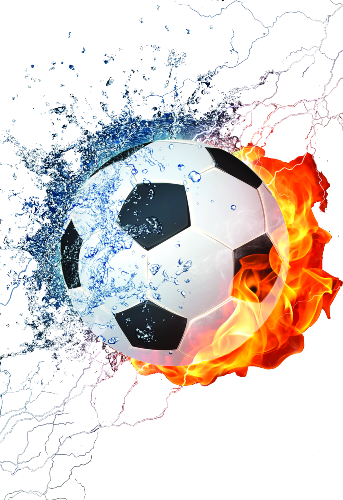

Sports Arena
You develop your skills as you beat hours and hours of practice
@rez_nabid
Play your favorite game here

Soccer in Sports Arena
Sports arena soccer, also known as indoor soccer, is a fast-paced version of the outdoor game that is played on a smaller field and typically features teams of five players, including a goalkeeper. The game is played inside a hockey or basketball arena with artificial turf or a hard surface, and the ball can bounce off the walls and ceiling, adding a unique element to the game. One of the biggest advantages of sports arena soccer is that it can be played year-round, regardless of weather conditions. It also offers a great workout, as the smaller field and constant action require players to be in excellent physical shape and possess quick reflexes. Sports arena soccer also offers a number of tactical and strategic challenges for players and coaches. Due to the smaller field size, players must be more creative in their passing and ball control, and teamwork and communication become even more important. Defending is also more difficult, as the ball can quickly change direction off the walls or ceiling. Overall, sports arena soccer offers a fun and exciting variation of the outdoor game, with its own unique set of challenges and opportunities. It is a great option for players of all ages and skill levels looking to stay active and improve their skills. Soccer, also known as football in many parts of the world, is the most popular sport globally, with an estimated 4 billion fans worldwide. The sport is played by two teams, each consisting of 11 players, on a rectangular field with a goal at each end. The objective of the game is to score more goals than the opposing team by getting the ball into their goal. The origins of soccer can be traced back to ancient civilizations such as China, Greece, and Rome. However, the modern game as we know it today was developed in England in the 19th century, with the formation of the first football association in 1863. Soccer has become a huge cultural phenomenon, with fans from all over the world coming together to support their favorite teams and players. It is played professionally in leagues and competitions across the world, including the English Premier League, La Liga in Spain, and the UEFA Champions League, which features the top teams from across Europe. The sport has also become a significant part of popular culture, with soccer stars becoming household names and influencing fashion, music, and entertainment. The FIFA World Cup, held every four years, is the most prestigious soccer competition, bringing together national teams from all over the world to compete for the coveted trophy. Soccer is more than just a game. It has the power to bring people together and foster a sense of community and belonging. Soccer fans are some of the most passionate and dedicated sports fans in the world, creating a unique atmosphere in stadiums and online. The sport has the ability to transcend cultural and linguistic barriers, connecting people from different backgrounds and nationalities. One of the most exciting aspects of soccer is its unpredictability. Unlike other sports, soccer games can end in draws, making it a more challenging and strategic game. Each match is different, with players and teams constantly adapting and evolving their tactics to gain an advantage. Soccer is also known for its physical demands, requiring players to have high levels of endurance, strength, and agility. It is a sport that requires both individual skill and teamwork, with players needing to work together to create scoring opportunities and defend against the opposing team. The sport has also seen significant advancements in technology, with goal-line technology and video assistant referee (VAR) systems being implemented to ensure fair play and reduce errors. Despite its global popularity, soccer still faces challenges, including issues with racism, corruption, and player welfare. However, many organizations are working to address these issues and promote a more inclusive and sustainable future for the sport. In conclusion, soccer is a fascinating and complex sport that has captured the hearts of fans worldwide. It has the power to unite people and foster a sense of community, while also pushing players to their physical and mental limits. As the sport continues to evolve, it is sure to remain a vital part of popular culture and a source of inspiration for future generations of players and fans alike.